PRO-SPECS · SEOCHON사진 구성 보드 / 기획 초안 01
A place holds memories.
Wish You
Were Here
장소의 기억에서, 풍경의 기억으로.
그리고 달리는 사람의 기억으로.
실제 사진의 역할과 읽는 순서를 정리한 구성안입니다. 문구는 편집 초안이며, 움직임은 장면별 지침으로 표시했습니다.
- 01과거와 현재를 만나다
- 02이 자리에 남은 시간을 보다
- 03누군가를 떠올리는 풍경
- 04마음을 한 장에 담다
- 05달리기가 남긴 기억
- 06이곳에서 직접 만나다
01 / 과거 사진으로 시작하는 히어로첫 화면은 사진에 집중 · 전시 제목은 전환 뒤에
 과거 / 기존 제공 사진
과거 / 기존 제공 사진→
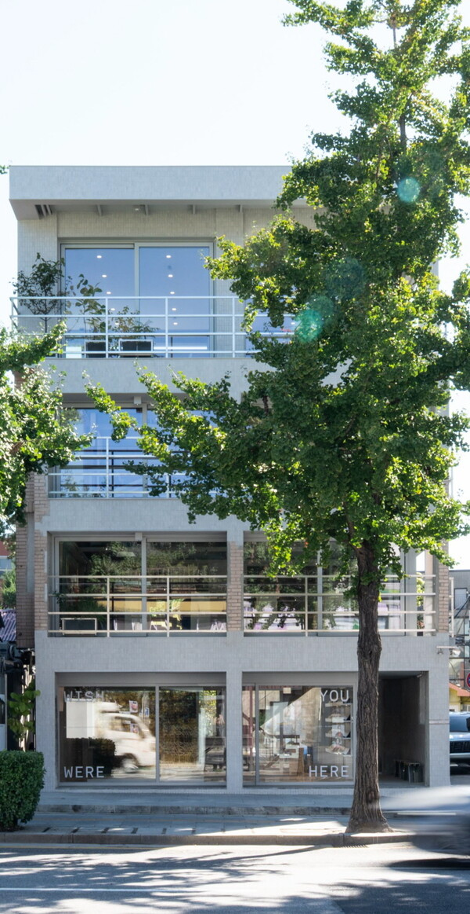
현재 / 기존 제공 사진① 과거를 충분히 바라본다② 스크롤로 현재가 드러난다
건물의 모습은 달라져도,
이 자리에 머문 기억은 남습니다.
Wish You Were Here
2026.09.05 — 10.05
0–15% / 계획과거 사진 유지
15–75% / 계획넓은 문지름 자국으로 현재 노출
75–90% / 계획현재 사진에 잠시 머무름
90–100% / 계획전시명과 다음 이야기로 연결
사진 사용작은 원본을 넓은 가로 화면에 강제로 채우지 않습니다. 건물이 온전히 보이는 세로 프레임과 주변 여백을 사용합니다.
움직임 계획스크롤에 연동하고 역방향도 허용합니다. 손가락이 왕복한 듯 넓은 흔적이 겹치며 현재가 드러나도록 설계합니다.
보드 읽는 법위 두 사진은 전환의 시작과 끝을 나란히 놓은 것입니다. 실제 사이트에서는 같은 프레임 안에서 전환합니다.
02 / 과거는 지금의 전시장 안에도 남아 있다핵심 사진 3988 · 보조 사진 3998
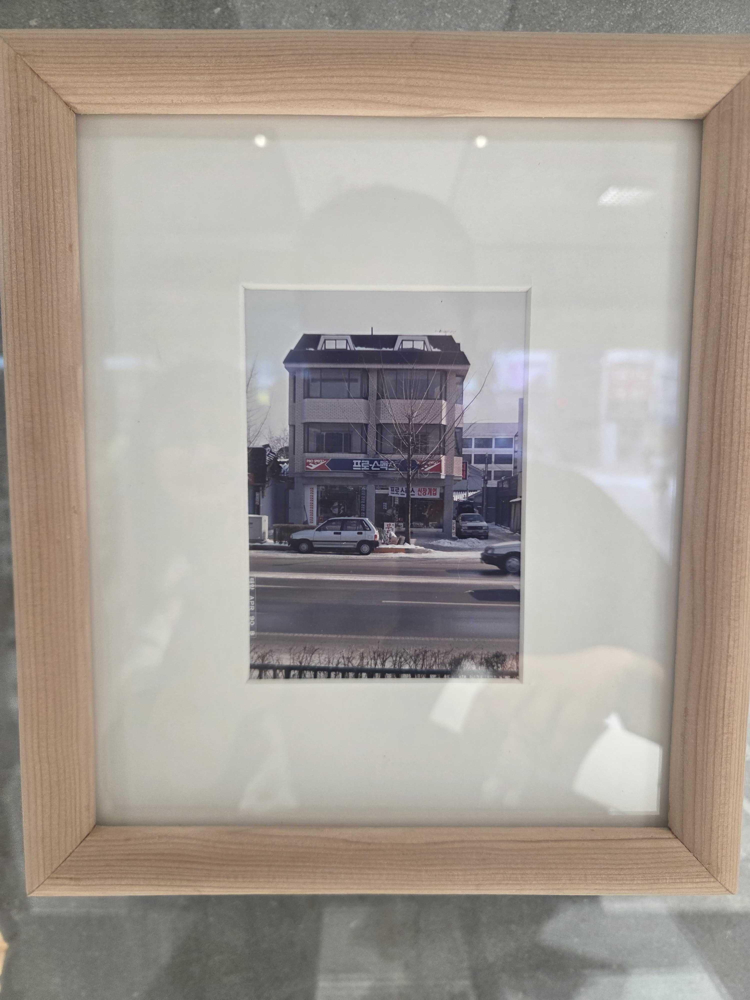
전시장에 놓인 옛 매장의 기록 · 1000023988The memory of a place
사진 속의 그 자리를,
오늘 다시 만납니다.
옛 매장의 모습이 한 장의 사진으로 남아 있습니다. 지금의 전시장 안에서 그 장면을 다시 바라봅니다.
건물의 모습은 달라져도,
장소를 기억하는 마음은 이어집니다.
기억은 사진에,
오늘의 감각은
공간에.
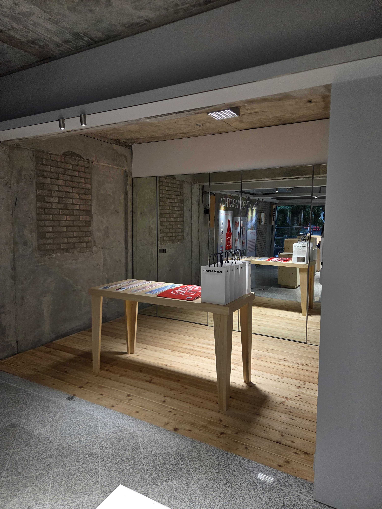
현재 공간의 재료와 빛 · 1000023998
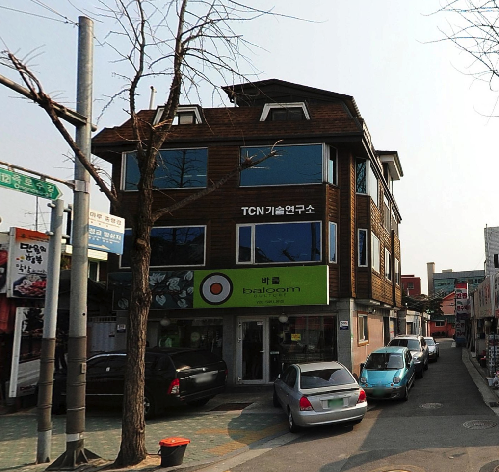
2010.03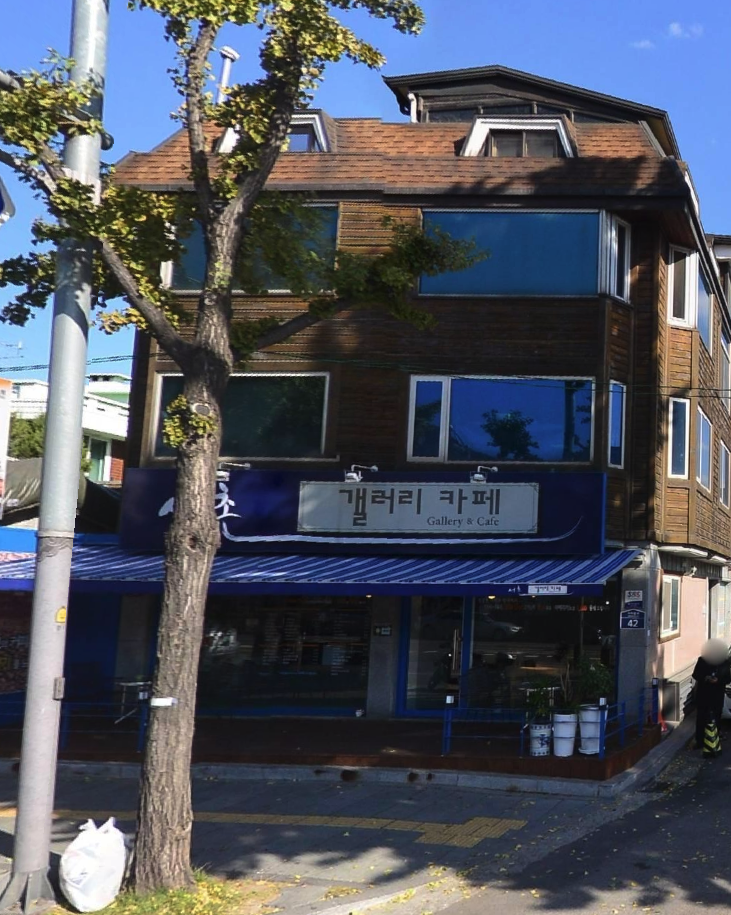
2014.11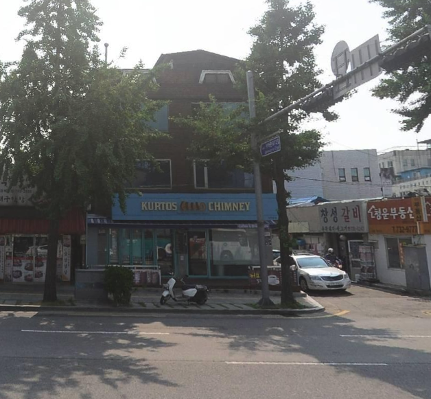
2016.06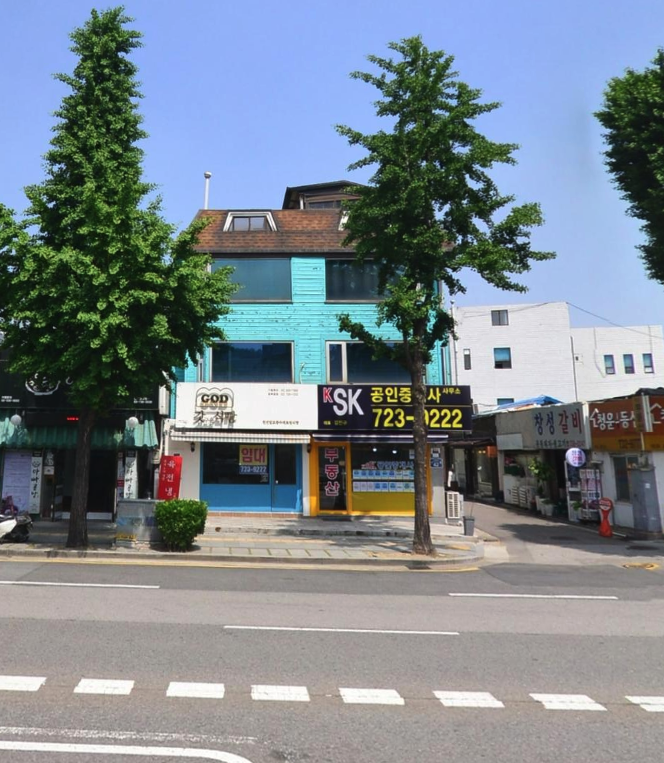
2020.06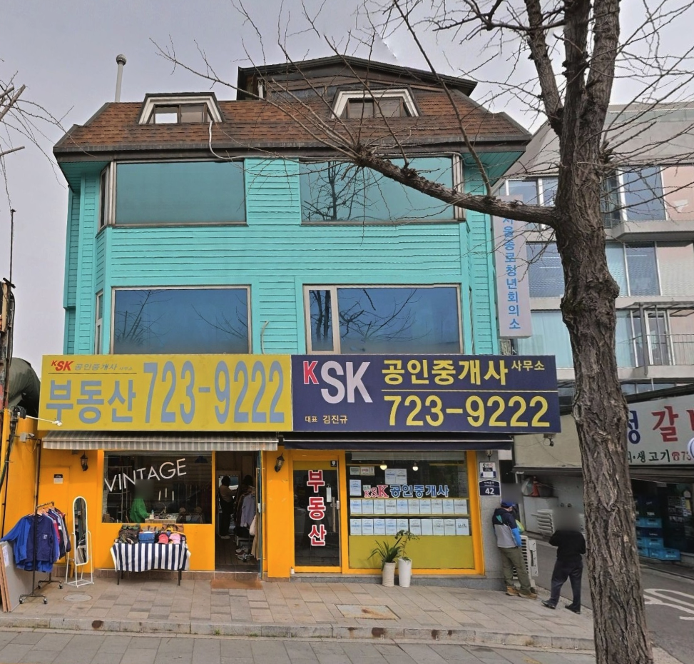
2025.03 새로 찾은 이야기액자 사진이 과거와 현재를 연결합니다. 과거를 설명한 뒤 실제 전시로 들어가는 흐름을 만듭니다.
시대별 기록5장을 짧게 훑는 한 묶음으로 배치합니다. 모바일에서는 가볍게 옆으로 넘깁니다. 긴 화면 고정은 사용하지 않습니다.
사실과 표현벽의 재료는 보이는 그대로 소개합니다. 원래 벽을 보존했는지, 언제 공사했는지는 추정하지 않습니다.
03 / 1층, 풍경 앞에서 누군가를 떠올리다핵심 사진 3987 · 보조 사진 3982
1F · Prologue: 향하는 마음
좋은 풍경 앞에서는
누군가가 떠오릅니다.
사진가 장수인이 세계 곳곳에서 기록한 장면들. 빛과 날씨, 문득 떠오르는 감각을 슬라이드 필름으로 만납니다.
함께 보았으면 좋았을 풍경.
함께였으면 좋았을 순간.
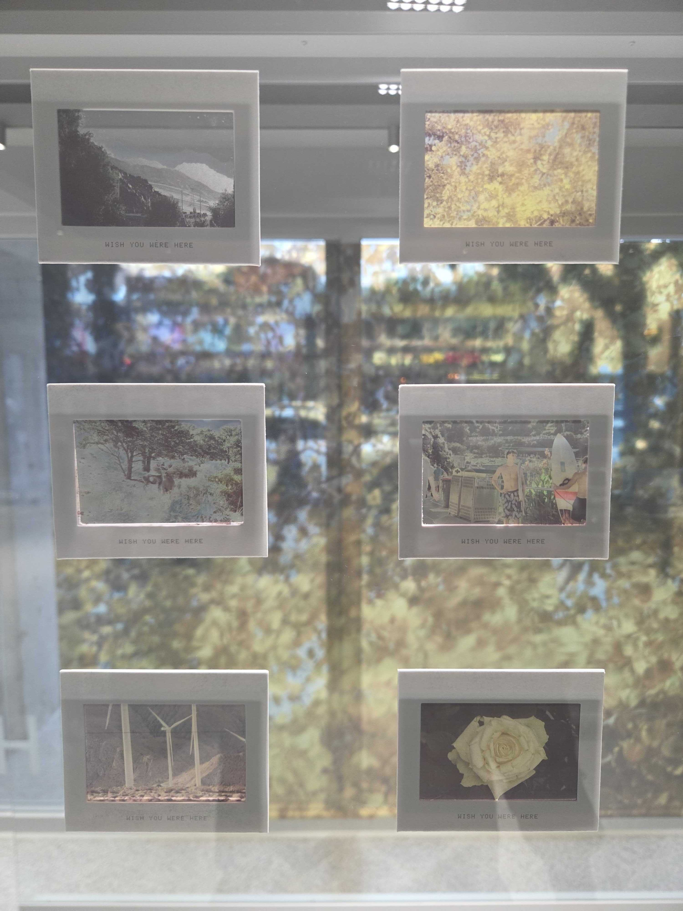
빛에 비치는 슬라이드 필름 · 1000023987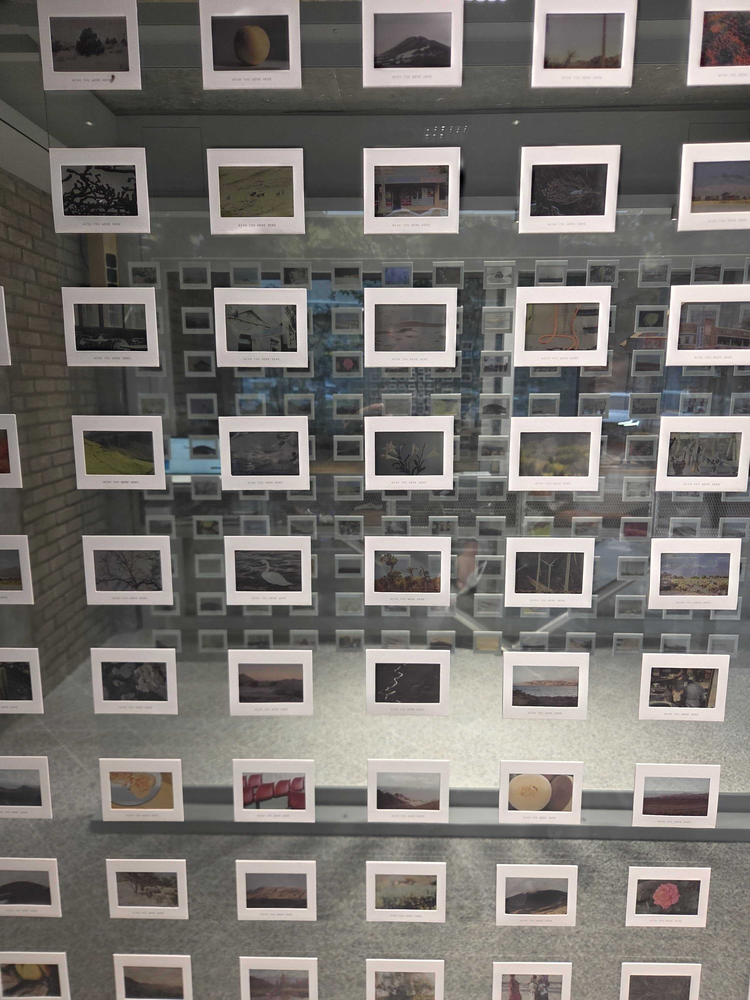
한 장에서 공간 전체로 시선을 넓힙니다 · 1000023982사진의 역할3987의 빛과 나무가 원하는 따뜻함을 만듭니다. 3982는 사진이 실제로 어떻게 전시되는지 보여줍니다.
화면 배치큰 세로 사진과 짧은 글을 나란히 놓습니다. 작은 보조 사진은 아래에 여백을 두고 배치합니다.
움직임 계획사진 자체를 흔들거나 필터로 꾸미지 않습니다. 장면 진입 때 짧고 부드럽게 나타나는 정도로 정리합니다.
04 / 보는 것에서, 마음을 남기는 경험으로핵심 사진 3986
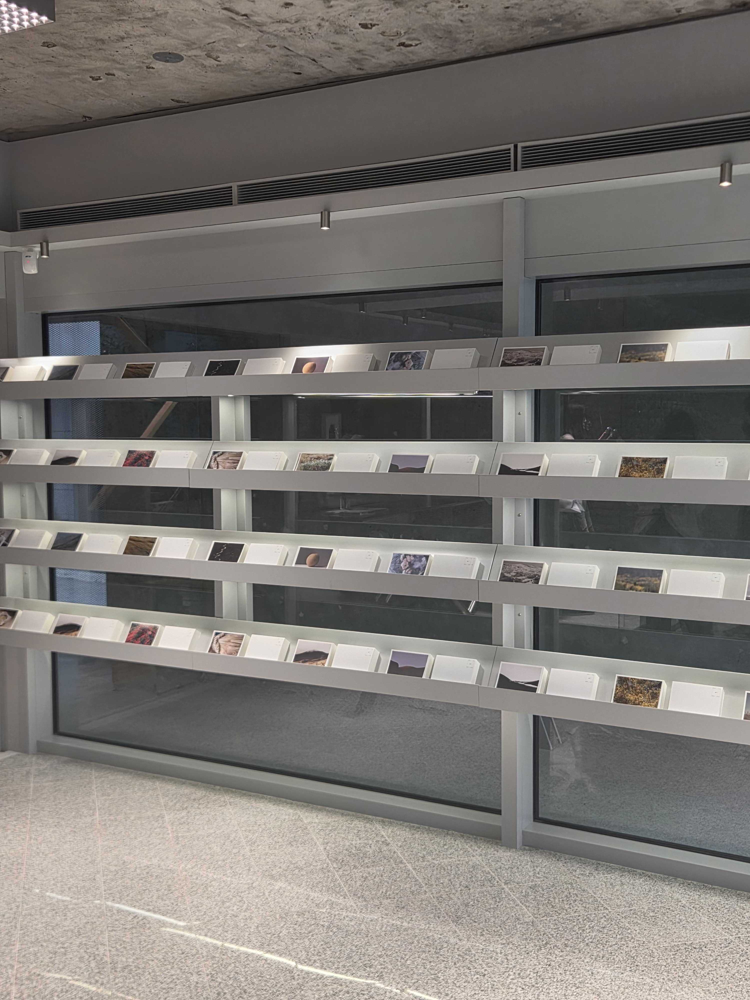
마음에 드는 풍경을 고르는 자리 · 1000023986A postcard to someone
떠오른 그 사람에게,
한 장의 마음을.
마음에 드는 사진을 엽서로 골라 가족이나 친구, 고마운 사람에게 편지를 남길 수 있습니다.
작성한 편지는 전시가 끝난 뒤,
적어둔 주소로 발송됩니다.
참여 방식은 사용자 제공 전시 설명을 바탕으로 작성했습니다.01 마음에 드는 사진을 고릅니다.02 전하고 싶은 말을 남깁니다.03 전시가 끝난 뒤 편지가 도착합니다.
직접 방문할 이유‘편지를 남길 수 있다’는 구체적인 경험을 한 장면으로 다룹니다.
이미지 선택엽서 선반을 사용합니다. 편지를 쓰는 손이나 우체통은 확보되지 않아 만들어 넣지 않습니다.
움직임 계획일반 스크롤로 읽고 지나갑니다. 현장에서 할 수 있는 경험을 설명하는 데 집중합니다.
05 / 2층, 달리는 사람이 남긴 기억핵심 사진 3991·3994 · 보조 사진 3997
2F · 12 Scenes from the Road: 풍경의 기억
달리기가 끝난 뒤에도,
남아 있는 것들.
춘천마라톤과 인연을 맺어온 12명의 러너. 황영조와 권은주, 페이스메이커와 아마추어 러너까지 서로 다른 사람들의 경험과 시간을 만납니다. 실제로 사용하고 오랫동안 간직해온 물건이 이야기를 이어갑니다.
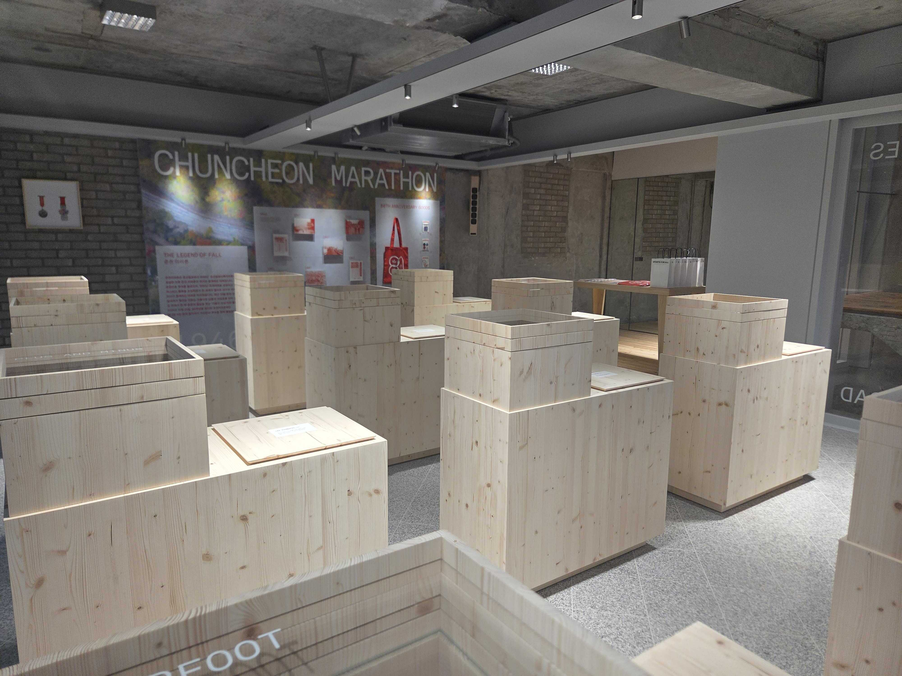
공간의 전경 · 데스크톱 1000023991 / 모바일 1000023990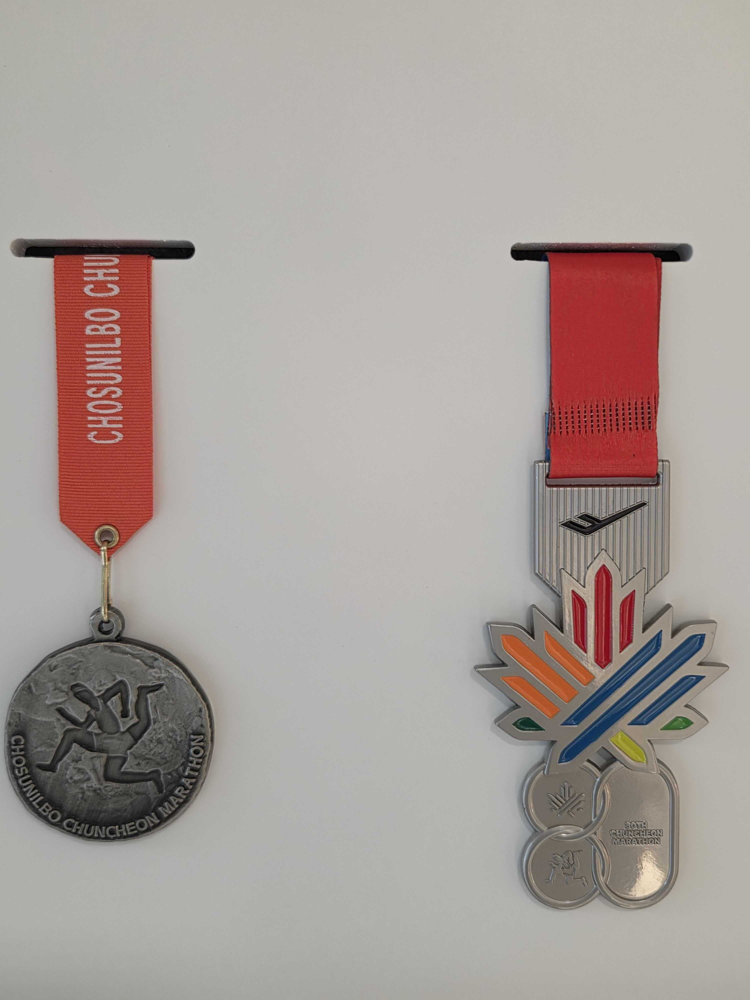
전시된 마라톤 메달 · 1000023994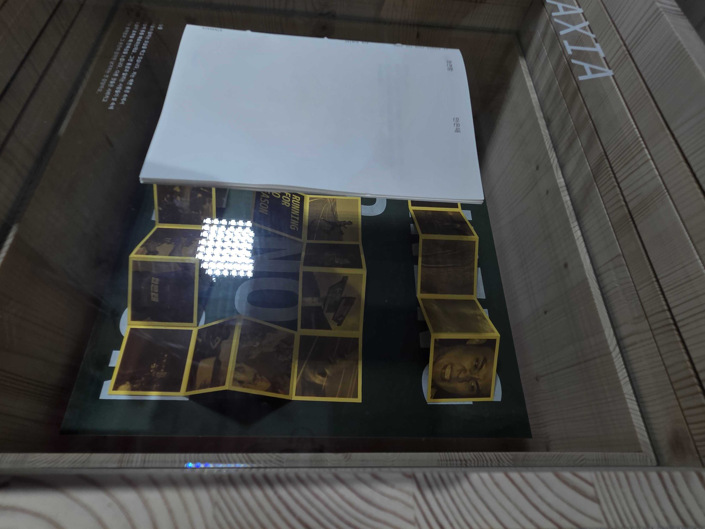
전시대에 놓인 책과 인쇄물 · 1000023997당신의 달리기는
어떤 기억으로 남아 있나요?
메달 하나, 책 한 권.
물건을 바라보다 자신의 달리기를 떠올리는 시간.
러너와의 연결공간 전경에서 실제 물건으로 시선을 좁힙니다. 대회 기록보다 개인이 간직한 기억에 초점을 맞춥니다.
사진과 설명의 경계메달과 책의 소유자는 현재 자료만으로 지정하지 않습니다. 권은주 명패 사진을 다른 물건의 주인 확인에 쓰지 않습니다.
보조 자료춘천마라톤 패널 3993은 필요할 때 맥락을 보충합니다. 기념 굿즈 3995는 별도 예비 컷으로 남깁니다.
06 / 이곳에서, 직접 만나는 기억핵심 사진 3999 · 안내지에 적힌 방문 정보
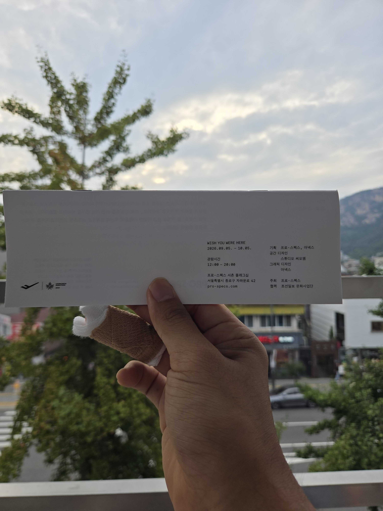
전시를 다녀온 한 장면 · 1000023999An invitation
Wish you
were here.
함께 보고 싶은 사람이 떠올랐다면.
- 전시
- Wish You Were Here
- 기간
- 2026.09.05 — 10.05
- 관람 시간
- 12:00 — 20:00
- 장소
- 프로-스펙스 서촌 플래그십
서울특별시 종로구 자하문로 42 - 관람
- 무료 입장 · 예약 없이 방문
지도에서 위치 보기 ↗버튼 배치 예시입니다. 실제 지도 연결은 사이트 제작 때 적용합니다.
마지막 사진현장에서 안내지를 들고 있는 사진은 방문자가 남긴 기억으로 읽힙니다. 편지를 쓰는 장면으로 설명하지 않습니다.
방문 정보 출처3999의 인쇄된 안내지에서 기간·시간·주소를 읽어 반영했습니다. 무료 입장·예약 불필요는 사용자 확인 사항입니다. 휴무 여부는 미확정이며 무휴로 표기하지 않습니다.
사이트에서의 접근히어로 이후 상단에 작은 ‘방문 안내’ 링크를 두어 긴 이야기를 다 읽지 않아도 이 장면으로 이동할 수 있게 합니다.
사진 선별 메모16장 원본 보관 · 핵심과 보조 역할 구분
본문에 넣지 않은 사진도 보관합니다. 겹치는 장면은 대표 컷을 선택하고, 설명과 맥락이 필요한 사진은 자료로 활용합니다. 아래는 예비 컷입니다.
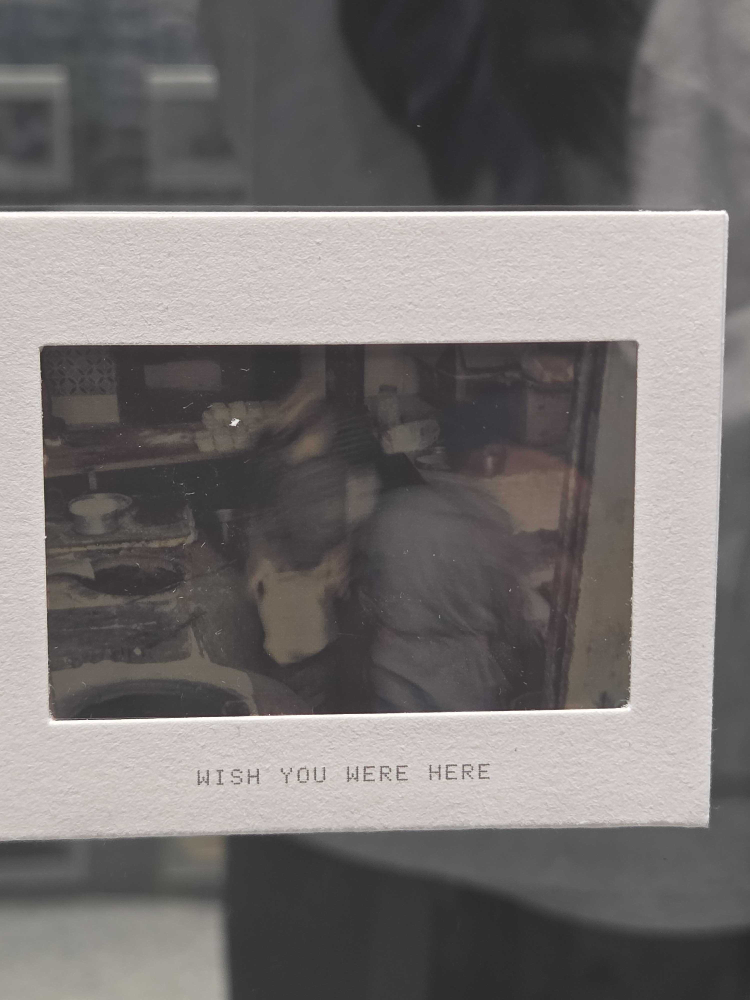
3984 / 예비 디테일
반사가 많아 큰 대표 사진보다 작은 보조 컷에 적합합니다.
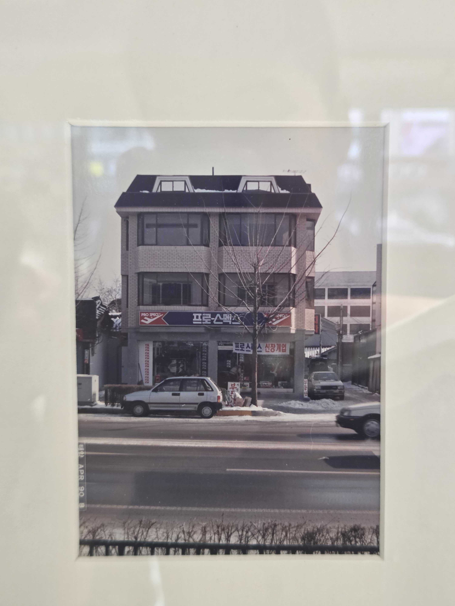
3989 / 옛 매장 기록
3988과 내용이 겹칩니다. 액자의 존재가 보이는 3988을 우선합니다.
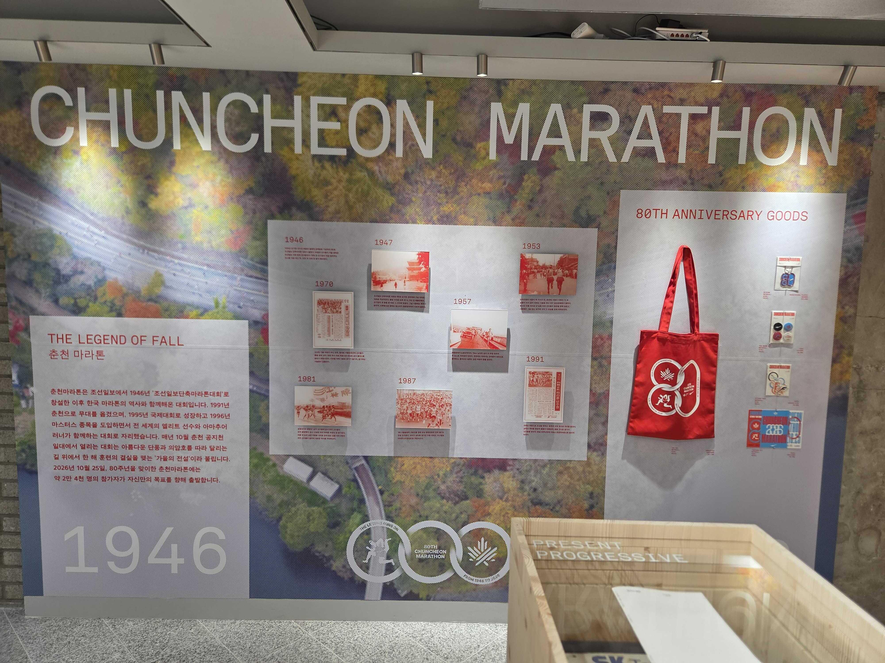
3993 / 전시 맥락
춘천마라톤 소개가 더 필요할 때 보충하는 사진입니다.
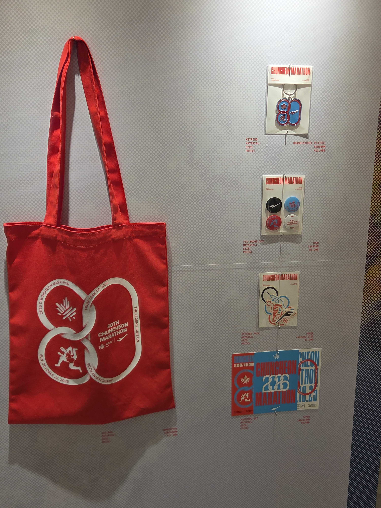
3995 / 기념 굿즈
방문 경험의 추가 요소로 활용할 수 있지만 본문 서사의 중심에서는 제외합니다.
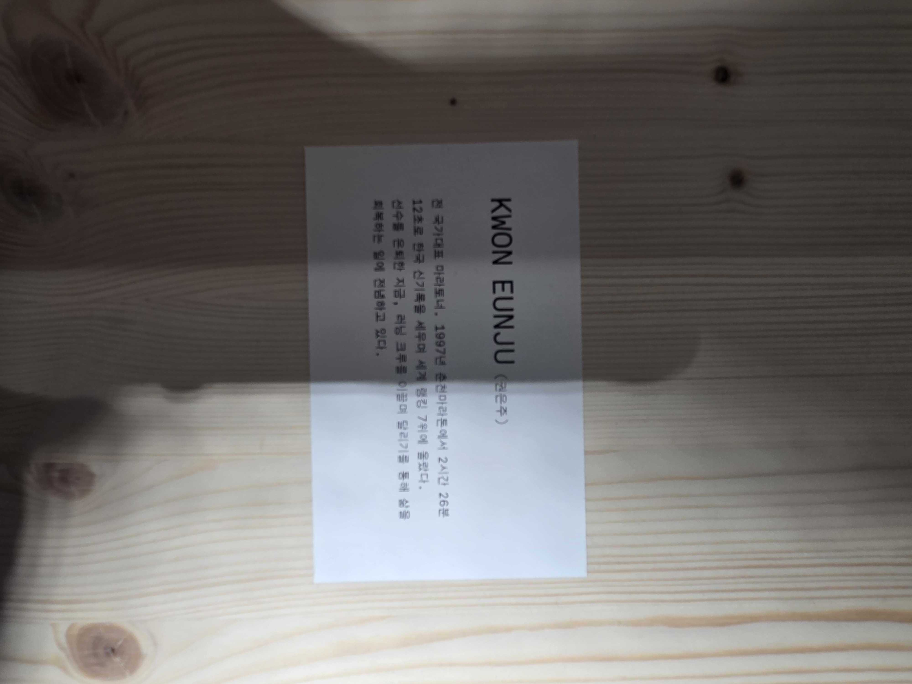
3996 / 설명 참고
인물 소개 자료로 보관합니다. 현재 사진은 읽는 방향이 돌아가 있어 본문 대표 컷으로 사용하지 않습니다.
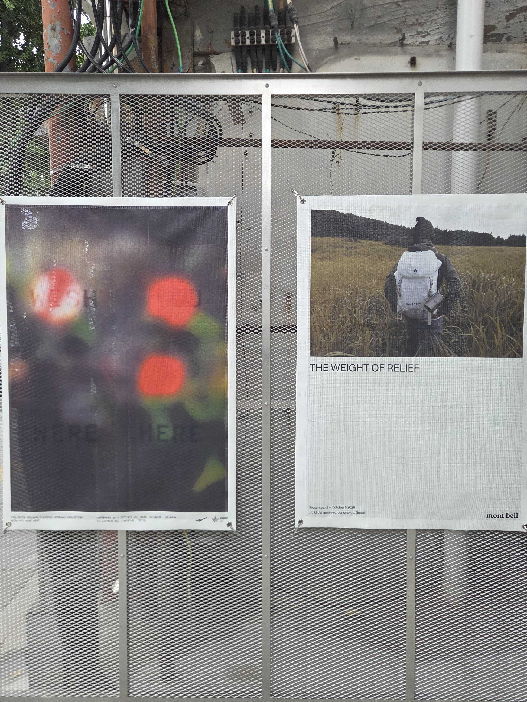
4002 / 외부 안내 참고
별도 몽벨 전시 제목과 3F 표기가 함께 보입니다. 이번 1·2층 전시 설명에 섞지 않습니다.